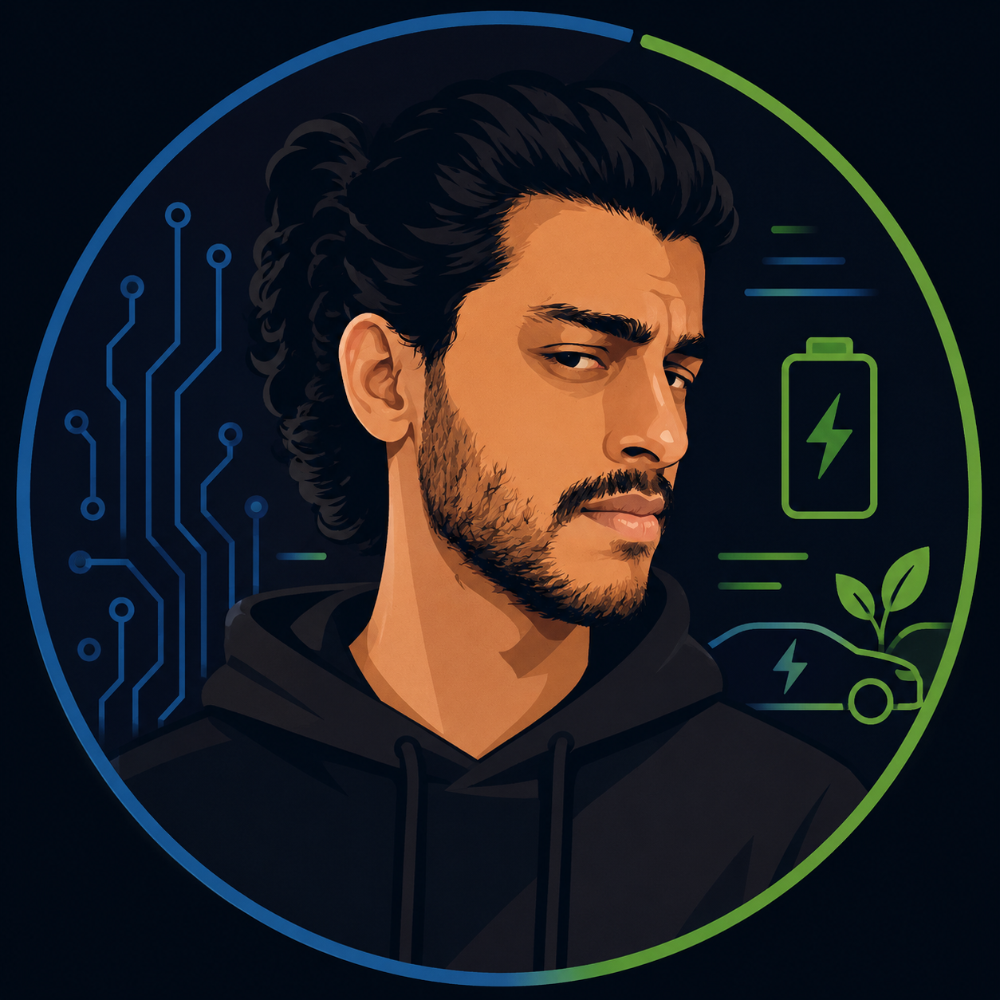

I'm Dushyanth Yadanaparthi — a mechanical engineer who fell in love with firmware, currently finishing an M.Sc. in Electromobility — majoring in AI & Sustainability — at FAU Erlangen-Nürnberg. I've built motor test platforms at Schaeffler, production tooling at Bosch, and an AI application pipeline that is mechanically incapable of exaggerating my skills. I like problems I don't understand yet — that's usually where the good stuff is.

The project that says the most about how I think — born out of frustration, built around one non-negotiable rule.
Job hunting as an engineer is a strange loop: you spend hours tailoring documents for screening algorithms that reject most people in milliseconds. I automated the whole thing — a Python pipeline that searches job boards nightly, scores each listing against my real profile with Claude, tailors my CV and cover letter, compiles LaTeX PDFs, tracks every application in SQLite, and knows exactly what each run cost.
But the interesting part isn't the automation. An LLM tailoring a CV will happily invent the
skill a job asks for — it reads perfectly and it's a lie. So the pipeline classifies every
job requirement against my profile (EXACT / SYNONYM /
ADJACENT / MISSING), and then verifies every claim in code:
any mapping the model can't back with real profile text gets downgraded, and a fact-checker
flags anything unverifiable in the output before I ever see it.
The design is informed by Stanford's research on algorithmic monocultures in hiring — screening is per-position keyword coverage, so honest terminology alignment matters and fabrication never does. The pipeline even aggregates the skills I don't have across all postings into a ranked learning roadmap. It doesn't just apply for me; it tells me what to study next.
Mostly embedded, mostly from curiosity, all of them taught me something a course couldn't.
A full fault-detection stack for CAN traffic: a virtual-clock simulator generates realistic bus traffic and injects a scheduled fault campaign with ground-truth labels, then interpretable timing and value detectors — trained only on clean traffic — catch silence, delay, bursts and implausible signals (100% recall/precision on the default campaign, zero false positives), and a rules-based diagnosis layer turns detections into DTC-style plain-language fault reports. Pure-stdlib Python, CI-tested, measured rather than claimed.
Complementary, Madgwick, and Extended Kalman filters, written twice: in Python to understand them, then in bare-metal C on STM32 and Arduino to respect them. Benchmarked accuracy (RMSE) against compute cost to map the real trade-offs on constrained hardware. The project that taught me to fall in love with a hard idea instead of fearing it.
A DSP library — FIR, IIR/biquad, moving-average filters, and an FFT analyzer — in portable C99 for microcontrollers. Every filter validated in Python simulation before being squeezed into firmware. I loved the craft of making something small and efficient enough to fit.
A vibration-based fault-detection model built on FFT features, running on-device with TensorFlow Lite Micro for real-time motor health monitoring. The idea of a tiny chip quietly listening for trouble before it happens still delights me.
A modular OpenCV pipeline — Canny edges, ROI masking, Hough transform, polynomial lane fitting — producing annotated overlays with curvature and vehicle-offset estimates for image and video streams.
Role-based OutSystems dashboards with CRUD workflows that the software team actually used in production, plus centralized failure catalogues — built with no stated requirements and no hand-holding. The project that taught me to deliver inside ambiguity.
Rules I didn't read anywhere — each one cost me something to learn.
I walked into power electronics knowing almost nothing. What carried me was breaking every problem into the smallest piece I could actually reason about — schematics line by line, signals edge by edge — until the overwhelming became workable.
Every filter in my DSP toolkit ran in Python before it ran in firmware. Validating in simulation first isn't slower — it's the difference between debugging logic and debugging logic, wiring, and physics at the same time.
File formats, wiring, timing budgets, a .DXD exporter producing a gigabyte per second — the "real" signal work is often the smallest part. Integration is where projects live or die, so that's where I put my attention.
When noisy square waves made the textbook RPM method useless, the answer wasn't a wall — it was understanding the signal more deeply and building my own pulse counting and filtering. Some of my proudest work came from problems I never expected to have.
I made my own job pipeline less impressive on paper so it could never overclaim on my behalf. I'd rather be questioned on something I truly know than praised for something I don't.
Token costs per API call, response rates per score band, cents per application. If a system matters, it should be able to tell you what it's doing and what it costs — mine can, and I hold my own work to the same standard.
I walked into Schaeffler with no power-electronics or embedded experience — just Python, C/C++, MATLAB, and a team willing to let me learn. By the end, the test platform I built had so many failsafes, and live data reviewable from anywhere with the right access, that it no longer needed anyone's personal attention. The research continues — but I still feel a little bad that the next student won't get to build the way I did. They'll analyse results from a machine that's already finished. My over-enthusiasm may have cost someone the same wonderful hands-on learning, with such interesting topics, alongside a wonderful team.
Three very different environments; each rewired something about how I engineer.
Python data workflows for logging and traceability in live production, OutSystems dashboards the software team relied on, failure catalogues, CAD models for adhesive application. No stated requirements, minimal support — a deliberate "analyse and come to a conclusion" culture that first panicked me, then taught me to work from instinct and own the outcome.
Built an end-to-end test platform for current-induced bearing degradation in BLDC motors, from reading schematics and reworking the PCB to C/C++ firmware for motor signal generation, a Python DAQ pipeline ingesting 200 kHz Dewesoft data (~1 GB per second of recording), automated FFT analysis with cloud upload and limit-based test halting inside a 2-second budget — and a custom noise-filtered RPM recovery when the textbook method drowned in noise. I walked in barely knowing the field; I walked out understanding every layer, thanks in no small part to a manager who took a leap of faith on me.
Operation and maintenance of thermal power generation — boilers, steam turbines, industrial energy systems. Where I first learned that big machines demand respect, process, and paperwork.
What I reach for, grouped the way I actually use it.
I am a professional speed skater. Eleven years of it — seven to eight hours a day, every day, alongside school and my bachelor's. State medals, national medals, and a body that learned what discipline actually costs.
These days the ice shares me with a different career path, but the skater never left — that's not a past tense, just a changed training plan. It's why I can sit with a broken build for hours without despair, why consistency matters more to me than bursts of brilliance, and why "keep showing up" is the closest thing I have to a philosophy. When my peers at Anna University elected me student representative two years running, and when I led the organising committee for two more — that was the same muscle. It always is.